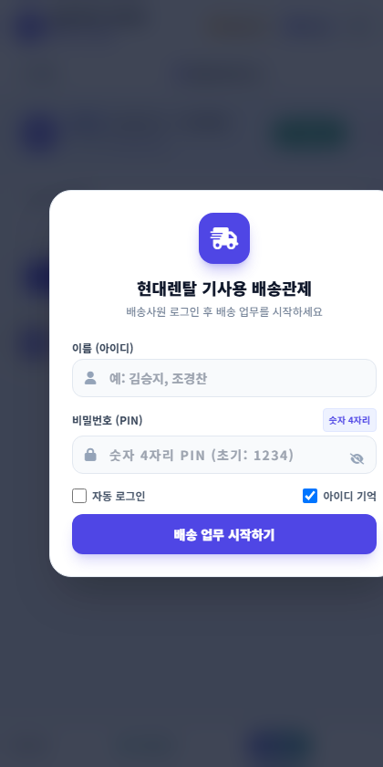
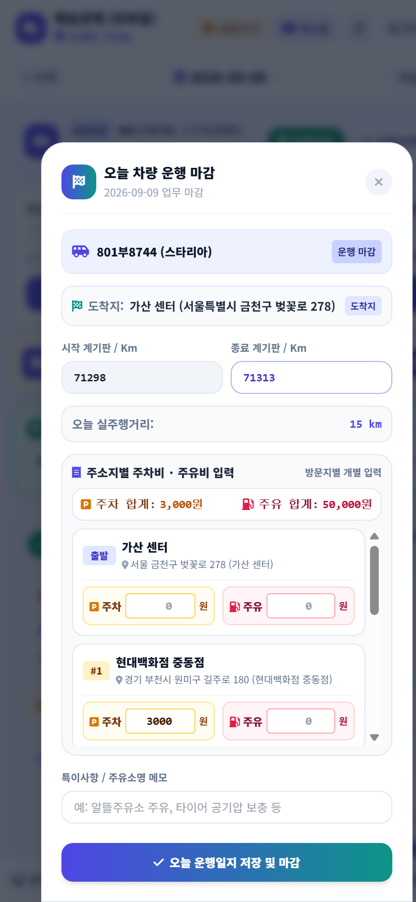

배송기사 스마트폰 모바일웹 (`mobile.html`)
출근 차량 탑승부터 티맵 내비 연동, 도착 처리, 센터 복귀 후 1분 운행마감까지 실제 화면과 함께 안내합니다.
1 스마트폰 바탕화면 앱(PWA) 추가 (1터치 즉시 실행)
기사님이 매번 인터넷 주소를 칠 필요 없이 스마트폰 바탕화면의 현대렌탈 트럭 아이콘 앱으로 즉시 실행할 수 있습니다.
모바일웹 상단 노란색 [바로가기] 터치 ➔ "홈 화면에 추가" ➔ [설치] 터치
사파리 하단 공유 버튼(네모+화살표) 터치 ➔ [홈 화면에 추가] 선택
2 ★ 기사 하루 배송업무 전체 프로세스 & 1분 운행마감 (상세 화면 예시)
출근부터 배송 완료, 센터 복귀 및 운행마감까지 실제 모바일 화면 캡처와 함께 확인하세요.
모바일 화면 상단의 [차량선택] 버튼을 누른 후 오늘 탑승할 스타리아(예: 801부8744) 카드를 터치합니다.

이전 운행자(1팀 또는 다른 기사)가 마감한 최종 누적 Km가 내 시작 계기판으로 자동 로드되어 수기 입력 오차가 없습니다.
차량을 잘못 골랐거나 미배차로 돌릴 때는, 이미 초록색 체크가 표시된 차량 카드를 한 번 더 터치하거나 하단의 [선택 취소 (미운행)]을 누르면 즉시 해제됩니다.
나에게 배정된 배송지 목록을 확인합니다. 상단 파란색 [🗺️ 전체 배송 지도 보기 & 실제 주행 경로] 버튼을 누르면 오늘 방문할 전체 경유지와 추천 도로 주행선이 지도 위에 시원하게 펼쳐집니다.

고객 요청이나 도로 정체로 인해 순서를 바꿔야 할 때는 각 배송 카드 우측 상단의 [▲] / [▼] 버튼을 눌러 순서를 즉시 조정합니다. 변경 즉시 관제 PC 화면에도 실시간 반영됩니다.
타임라인 최상단에 오늘 설정된 출발지(가산 센터 또는 등록 거점)가 고정 표시되어 동선의 시작점을 직관적으로 파악할 수 있습니다.
배송지로 출발할 때는 모바일 배송 카드 좌측 하단의 로즈레드 색상 티맵 안내 버튼을 터치하여 출발해야 합니다.
- 출발 시각 자동 기록: 버튼을 누르는 즉시 관제 대시보드와 시간 관리 시스템에 출발 시각이 자동 전송됩니다.
- 내비 목적지 자동 입력: 고객사의 상세 도로명 주소가 티맵 내비에 자동 세팅되어 길안내가 바로 시작됩니다.
고객사에 도착하면 우측 하단의 배송지 도착 버튼을 누릅니다.
출발부터 도착까지 걸린 주행 시간(예: 35분 소요)이 전산에 자동 기록됩니다.
문 앞 배송 사진 등록 시 데이터 절약을 위해 자동 압축되어 클라우드에 영구 저장됩니다.
초록색 전화 버튼을 누르면 오발신 방지 확인 후 즉시 스마트폰 통화 화면으로 연결됩니다.
모든 배송을 마치고 가산 센터로 복귀하면 상단 우측의 [운행마감] (초록색 깃발) 버튼을 누르고 아래 3단계를 순서대로 진행합니다.

차량 계기판에 표시된 현재 최종 Km 숫자만 입력하면 오늘 달린 거리가 자동 계산됩니다.
총액을 뭉뚱그려 적지 않고, 실제 비용이 발생한 고객사나 경유지별로 주차비·주유비를 각각 입력합니다. 입력 즉시 상단 배너에 자동 합산되며 운행일지 명세표의 해당 주소지 행에 정확히 분배되어 국세청 증빙에 완벽 호환됩니다.
버튼 클릭 즉시 법인차량 운행일지 시스템으로 오늘 주행 데이터와 경유지가 일괄 전송되며 오늘 일과가 공식 마감됩니다.
* 현지(자택) 퇴근 시: 센터로 복귀하지 않고 자택으로 바로 퇴근할 때는 마감 팝업의 [도착지 변경]을 눌러 자택 주소를 입력하고 마감하시면 해당 위치까지의 거리로 안전하게 마감됩니다.